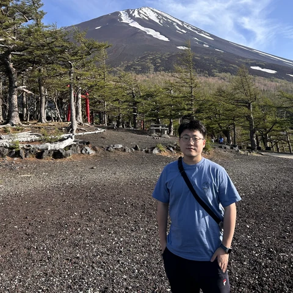
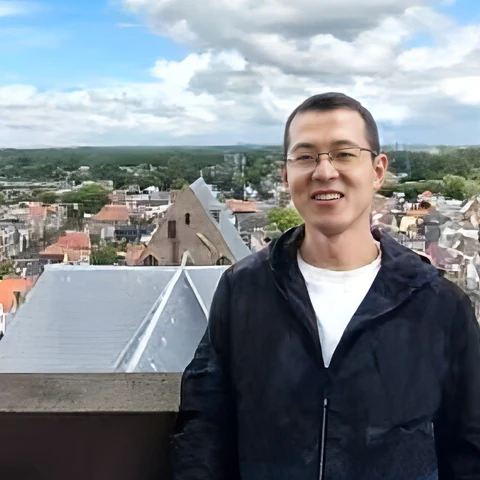
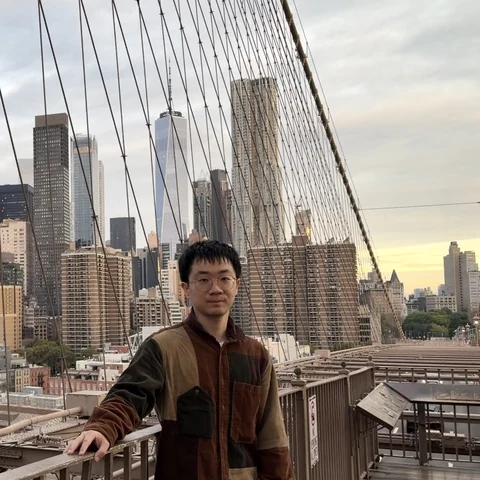
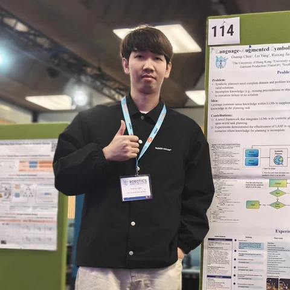
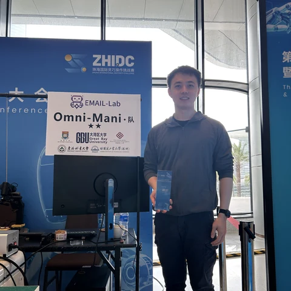
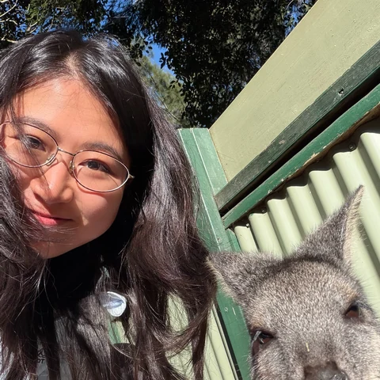
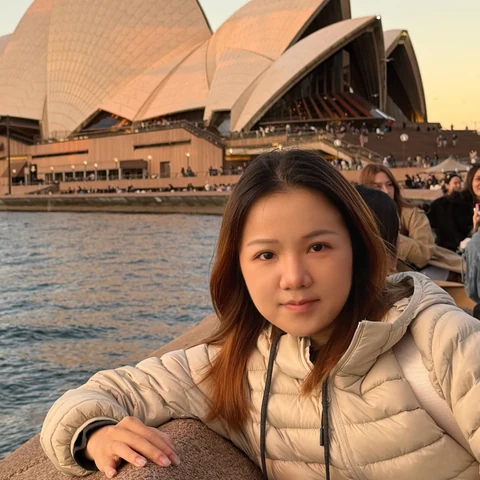
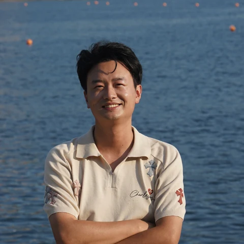
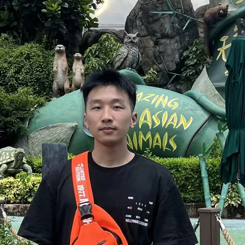
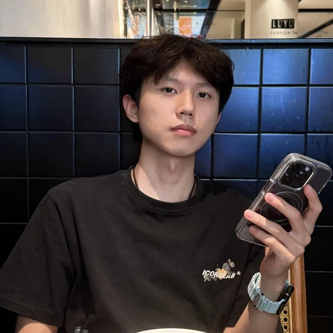

Jia Pan
Associate Professor, HKU
Research: Robotics and artificial intelligence
PANDA Lab / The University of Hong Kong
Year indicates when the member joined the lab.
Postdoc (2025)
Research: Navigation
Postdoc (2026)
Research: Locomotion, safety, reinforcement learning
Postdoc (2026)
Research: Manipulation, imitation learning

Postdoc (2026)
Research: Dexterous manipulation, dexterous hand design
Postdoc (2026)
Research: Computational neuromorphic vision, large behavior models
Year indicates when the student entered the program.

PhD (2020)
Research: Human-robot interaction, collision avoidance, teleoperation

PhD (2020)
Research: Robotics data mining, automatic annotation systems, human-computer interaction

PhD (2021)
Research: Navigation, manipulation
PhD (2021)
Research: Opto-fiber tactile sensing
PhD (2023)
Research: Robot learning, reinforcement learning, robot manipulation
PhD (2023)
Research: Bionic snake robots, embodied intelligence, computer vision, reinforcement learning
PhD (2023)
Research: Visual tracking

PhD (2023)
Research: Robot task and motion planning

PhD (2023)
Research: Active reconstruction, aerial systems: perception and autonomy
PhD (2024)
Research: Imitation learning, bimanual manipulation

PhD (2024)
Research: Human-robot interaction, manipulation
PhD (2024)
Research: Manipulation

PhD (2025)
Research: Humanoid whole-body manipulation
PhD (2025)
Research: Manipulation, RL, embodied AI
PhD (2025)
Research: Robot navigation, robotic photography, robot learning

PhD (2025)
Research: Reinforcement learning, imitation learning

PhD (2026)
Research: Dexterous manipulation, robotics
PhD (2026)
Research: Long-horizon manipulation
PhD (2026)
Research: Embodied AI, UAVs, navigation
PhD (2026)
Research: Loco-manipulation, human-robot interaction, RL
PhD (2026)
Research: Loco-manipulation, humanoid control, RL
Year indicates when the student entered the program.
Profiles will be added here.
Dates indicate the period at the lab.
| Name | Role & years | Current position | Research |
|---|---|---|---|
| Shuai Zhang | Postdoc 2021–2025 | Research Assistant Professor, The Hong Kong Polytechnic University | Swarm robotics, multi-robot systems, robotics and autonomous systems, distributed control |
| Lei Yang | Postdoc 2021–2023 | The University of Hong Kong | Computer graphics, manipulation |
| Peng Zhou | Postdoc 2022–2025 | Great Bay University (GBU) | Deformable object manipulation, dexterous manipulation, agentic robotics |
| Liang Lu | Postdoc 2023–October 2025 | Assistant Professor, Shenzhen University | Robot motion planning and scene understanding |
| Hang Xu | Postdoc 2023–Winter 2025 | Robotics Researcher, JD Technology (JDT) | Bimanual manipulation |
| Jiaming Qi | Postdoc 2023–November 2024 | Northeast Forestry University | Deformable object manipulation, robot manipulation |
| Yizhou Chen | Postdoc 2023–Fall 2026 | To be added. | Task and motion planning, robot learning |
| Name | Role & years | Current position | Research |
|---|---|---|---|
| Yotsen Yan | PhD 2018–2022 | Tenure-track Associate Professor, Global Institute of Future Technology, Shanghai Jiao Tong University | Magnetic tactile sensing, dexterous manipulation, embodied AI |
| Tingxiang Fan | PhD 2018–2022 | Light Origins | To be added. |
| Guanhua Chen | PhD 2018–September 2022 | Assistant Professor, Department of Statistics and Data Science, Southern University of Science and Technology | Continual learning and self-evolution of large-model agents, embodied agents |
| Dawei Wang | PhD 2018–2023 | Huawei Noah's Ark Lab | Robotics, reinforcement learning |
| Chen Wang | PhD 2019–Spring 2026 | AgiBot | Manipulation |
| Wanli Xing | PhD 2019–Fall 2025 | Sharpa | Robot learning, dexterous manipulation, mobile manipulation, event-based vision |
| Zeqing Zhang | PhD 2020–Fall 2024 | Research Assistant Professor, The Hong Kong Polytechnic University | Tactile sensing, contact modeling, manipulation |
| Yinqiang Zhang | PhD 2021–Spring 2026 | Entrepreneurship in embodied AI | SLAM, 3D reconstruction, building information models, robot navigation |
| Name | Role & years | Current position | Research |
|---|---|---|---|
| Yunhai Wang | Master 2023–Summer 2026 | Entrepreneurship | Fabric manipulation |